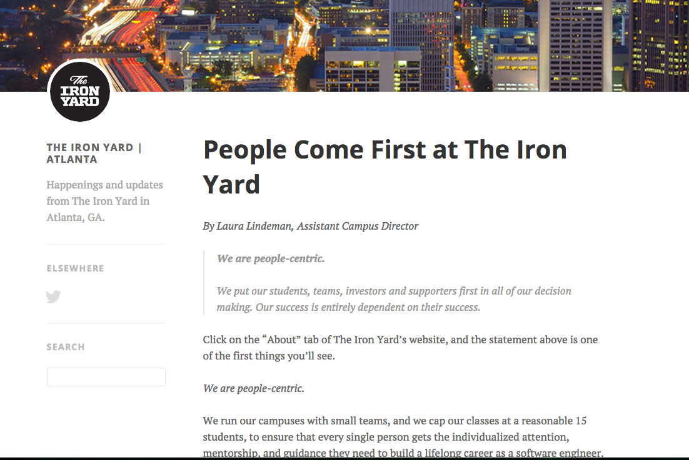
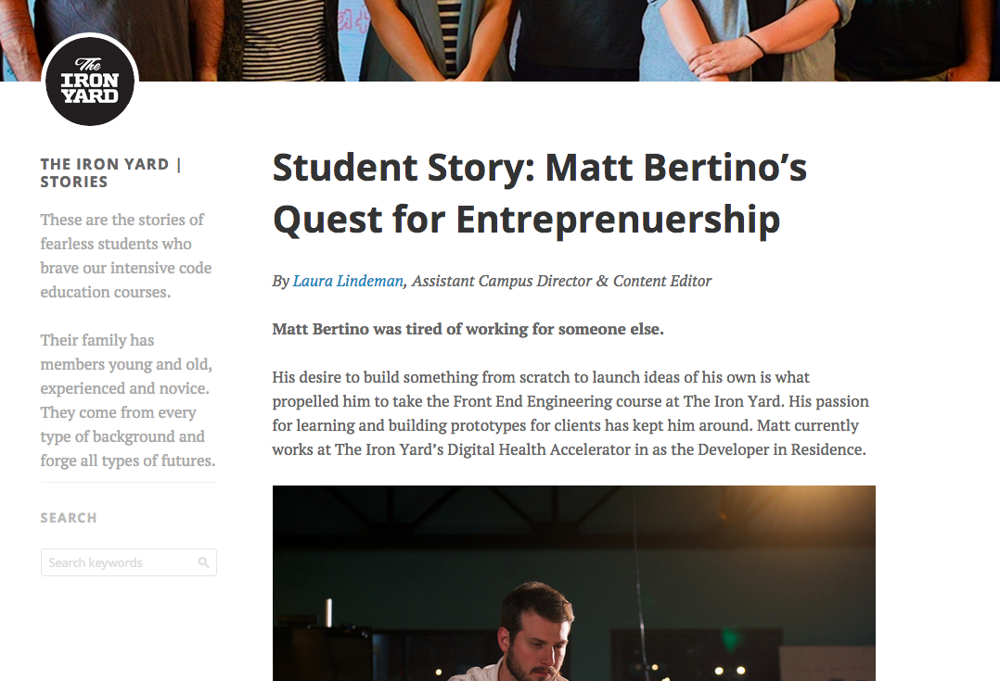
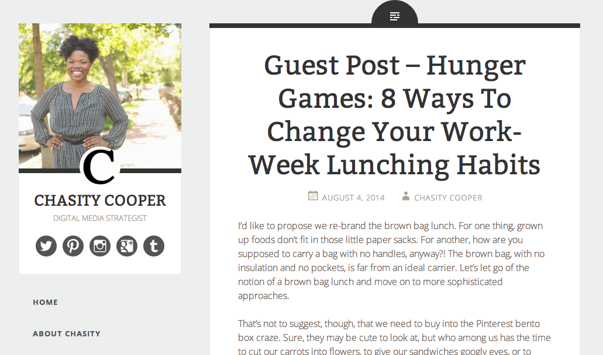
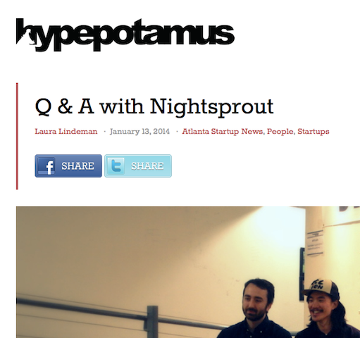
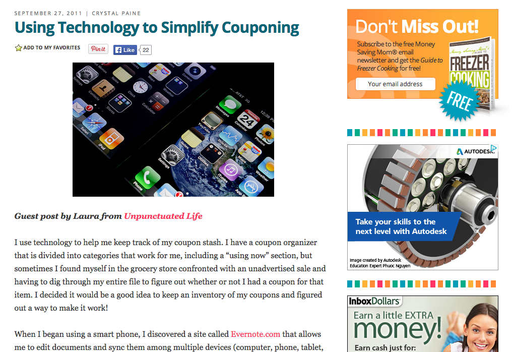

Laura Lindeman
Nice to meet you!
I believe in the power of online communities. I've been blogging since 2011 but crafting words for much longer. I became increasingly involved with creating online content in both of my most recent full-time endeavors and recently took the plunge to become a full-time writer. A few of my recent efforts are highlighted here. Please click any of the images to view the full site mentioned!
I'm open to opportunities in writing (website copy, blog posts, haikus, etc.) and editing (proud owner of an AP Stylebook). Please email me at laura@lauralindeman.com to find out more.
Read my blog at:
blog.lauralindeman.comConnect with me!


Hosted on GitHub Pages — Theme by orderedlist
Online Content
The Iron Yard
As Assistant Campus Director at The Iron Yard, I contributed to both the local Atlanta campus blog and the Stories blog, a repository of posts highlighting the experience of learning to code through on of our three-month cohorts.
 ChasityCooper.com
I contributed to Chasity Cooper's blog with a post about overcoming the weekday lunchtime slump.
Hypepotamus
I wrote posts highlighting Atlanta tech startups and entrepeneurs for Hypepotamus, a Midtown-based open source business development engine. My work appears on Hypepotamus.com and is syndicated on the AJC's Tech Biz blog.
Curbed Atlanta
As a contributor to Curbed Atlanta, I wrote articles about events and topics relevant to intown living.
MoneySavingMom.com
I've had two guest posts featured on MoneySavingMom.com, a personal finance blog averaging over four million pageviews and over a million unique visitors each month.
Tools
- Trello
- Basecamp
- Nutshell
- Wordpress
- Tumblr
- Markdown
- Tweetdeck
- bit.ly
- GitHub for Mac
- TextMate
- Google Analytics